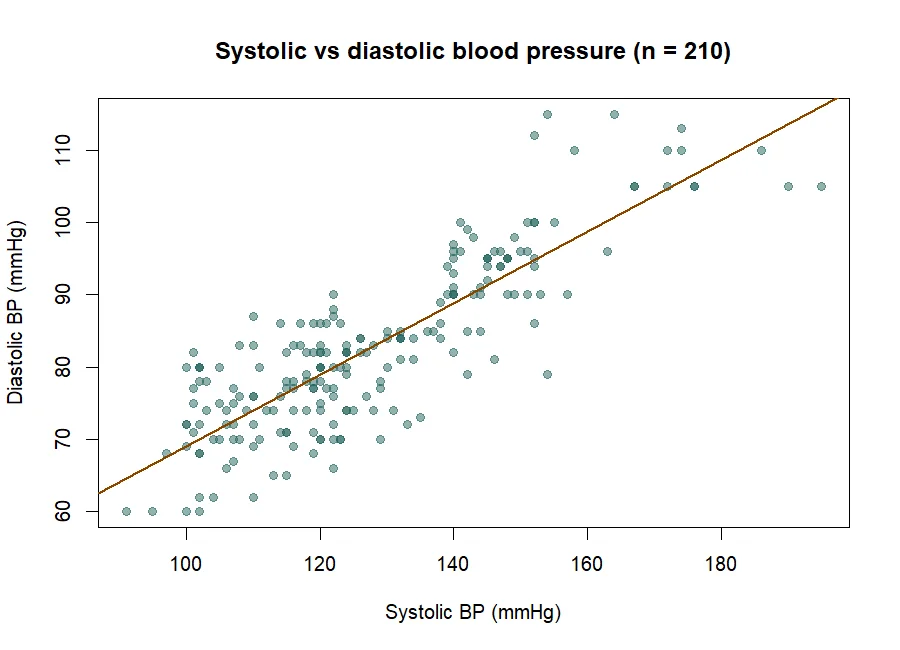

Scripts
R scripts and plots
Three scripts, downloadable as written. The comments are part of the evidence: they record the checks, the errors and what each one taught.
Brown (1994), Table II
This script rebuilds a published figure from its printed counts. It begins with Brown’s counts rather than the finished percentages, so that the problem in one row of the table is found by the checks and not hidden before plotting. The opening of the script reads:
# ============================================================
# Brown (1994), Table II: audit the counts, then draw Figure 1
# File name: brown_table2_likert_revised.R
#
# WHY THIS VERSION IS DIFFERENT
# This script begins with Brown's printed COUNTS, not only the
# finished percentages. That matters because the Row 8 problem
# should be discovered by the checks, not hidden before plotting.The script draws the diverging-bar figure with ggplot2 and uses ggpattern to mark the reconstructed segment with diagonal stripes.
Blood pressure correlation
A short script that reads an SPSS file, checks the two blood pressure columns, and records the traps met on the way to a correlation. The dataset is not published here.
# Load the package needed to read the SPSS file
library(haven)
# Load the health dataset
health <- read_sav("Health Data.sav")
dim(health)
names(health)
head(health[, c("sbp", "dbp")])Part of the script’s own record of what went wrong:
# ---- Correlation traps and what I learned ----
# Trap 1: cor() cannot use the entire health dataset because some columns
# contain text, such as the letters used in the sex column.
# cor(health) # This would cause an error because cor() needs numbers.

Text description of Figure 1.
Each point is one observation, with systolic pressure on one axis and diastolic pressure on the other. The points rise together from lower left to upper right, and the fitted straight line follows that upward slope.
Pima diabetes analysis
The full annotated script behind the Unit 12 presentation. Every step carries comments in the same pattern: what was checked, what went wrong, how it was fixed, the evidence, and what was learned. The opening reads:
# ============================================================
# DIABETES DATA ANALYSIS
# ============================================================
# Document all analysis steps and learning using # comments.
# These comments will help with the presentation and final reflection.The script reads a CSV file of 768 records. The dataset is not published here, and the working-directory line has been replaced by a comment so the script can be run from any folder.